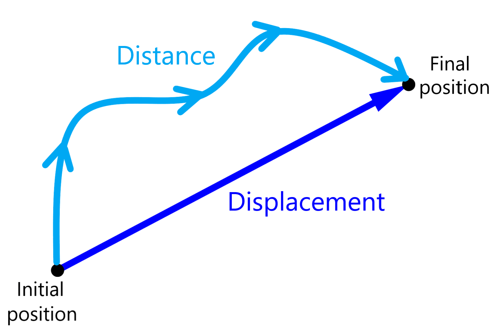

Force & Motion
Definitions
Distance VS Displacement
SI Unit: meters
Distance is a measure of the path from point A to B (with twists and turns). Displacement is a measure of the path from point A to B in a straight line segment.
Speed VS Velocity
SI Unit: meters/second
Speed is a measure of the change in distance. Velocity is a measure of the change in displacement.
Velocity also measures directions, for example: 10km/h east. Imagine speed as a sub category of velocity, velocity includes speed and direction while speed only shows change in distance.
Mass VS Weight
SI Unit: grams
Mass is the amount of matter in an object and is a measure of its inertia, while weight is the force of gravity acting on an object's mass. Mass remains constant regardless of location, whereas weight changes depending on the gravitational field.
Acceleration
SI Unit: meters/seconds2
Acceleration is the change in velocity over time.
vector quantity
Magnitude & Direction
E.G: 500m, North
scalar quantity
Value
E.G 40kg
magnitude
Value or defined (quantity which you may need to find). ( usually numbers)
force
Always force us either pull or push and it is measured by a value called “N” which stands for Newton.
F = ma
m is mass, a is acceleration
Formulae
s = speed
d = distance
t = time
v = velocity
d = displacement
t = time
F = force
m = mass
a = acceleration
a = acceleration
vf = final velocity
vi = initial velocity
vi can also be represented as u
tf = final time
ti = initial time
∆ = final minus initial basically
Newton's Laws of Motion
Newton's First Law of motion (Law of inertia)
An object in motion will remain in motion, and an object at rest will remain at rest, unless acted upon by a force.
Newton's Second Law of motion
Force is equal to mass times acceleration
Newton's Third Law of motion
For every action there is a equal but opposite reaction.